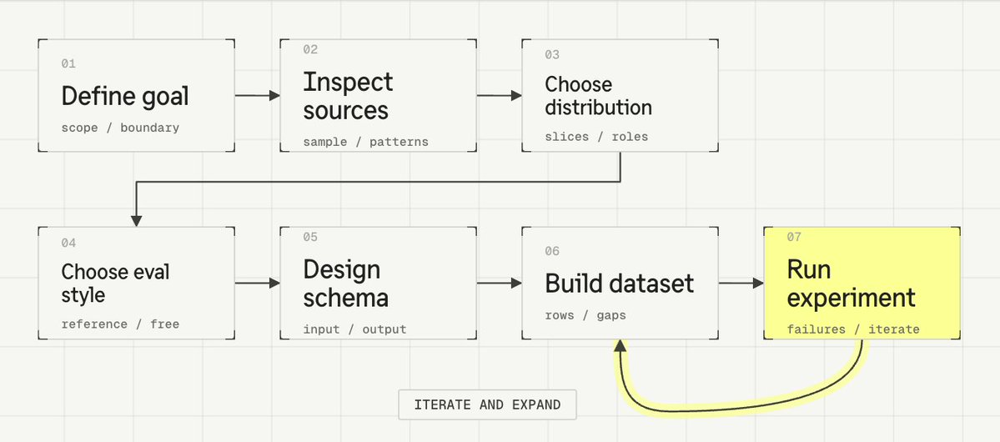
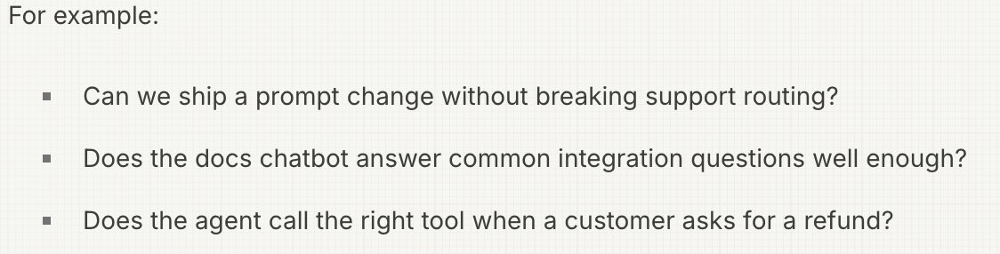
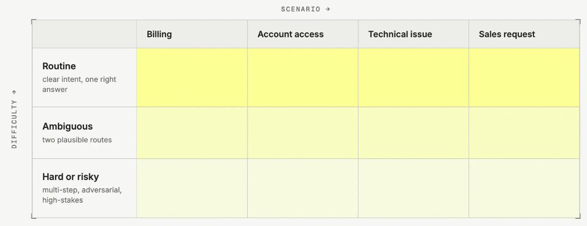
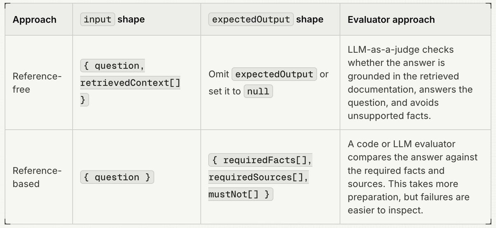
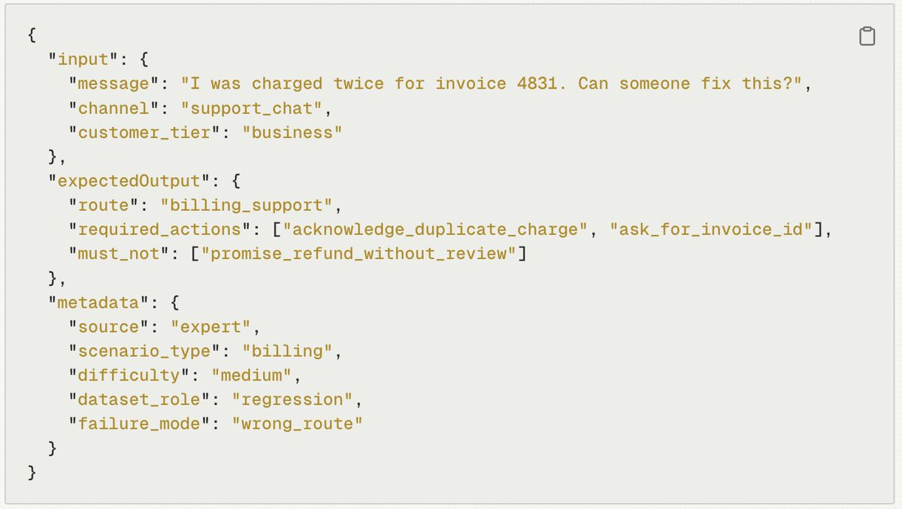

Scoping and curating eval datasets
Your agent is running and yielding first results, but at some point you realize: 'vibe-fixing my application does not cut it anymore'. You need a structured and strategic way to make sure your agent consistently does what it is supposed to do. You need an eval dataset.
An eval dataset is a repeatable set of examples that represent the scope of your application, and that you use to measure and improve your system. By running your application against the same inputs over time, you can track quality with metrics, compare changes, and catch regressions before they affect production users.
This guide focuses on the design work that happens before and while you create datasets and dataset items. To learn more about the basic building blocks you can check out our academy section on datasets

Dataset design is iterative. A good starting point is a minimally complete dataset: about 15-30 rows that can run through your application, cover the most important input slices, and have an evaluator or review rubric. Run that version early, fix the schema and evaluator, then expand into the gaps you see from those runs or from production input.
Your application will very likely have more than one evaluation dataset. Datasets are often scoped to a specific part of the system or to one sub-step the agent takes.
1. Start with the goal of the dataset
Before writing rows, define the smallest useful goal the dataset should support. This keeps the dataset from becoming a vague bucket of interesting examples.

A good early starting point for a dataset is looking at the most common examples end to end. This gives you the foundation and the general understanding from which you can expand.
Over time, teams add datasets for single steps, adversarial cases, red teaming, or specific sub-use cases in their application. We have even seen datasets for checking company name spelling.
The goal you set for your dataset defines boundary and job: end-to-end datasets use the payload the application receives, while step-level datasets use the structured state a step sees in production.
If two jobs need different inputs, evaluators, or release decisions, split them. A stable regression dataset and an adversarial-input dataset can both be useful, but combining them without a clear split makes aggregate scores harder to interpret.
2. Inspect available sources
Before selecting examples or writing dataset items, inspect a small sample of the material you could use. The goal is to understand what exists and how it's different from what you expected.
Start with three source types:
- Production traces: show realistic usage, common paths, and observed failures. Scores, user feedback, tickets, and complaints are discovery signals for useful traces; they are not a separate source type.
- Existing assets: old datasets, FAQs, policies, docs, support macros, CSVs, JSON files, and benchmarks can bootstrap known coverage quickly.
- Synthetic cases: expert-written and AI-generated examples can fill gaps and give you an idea of what your application is expected to face.
For each source, review input topics, input and output shapes, and failure modes. You might learn that production traces lack the retrieval context your evaluator needs, that tickets from legacy systems expose better failure labels than traces, or that there is already a good set of end-to-end examples, because support created a 'FAQ' at some point.
Use these sources to choose the distribution of inputs, evaluators, and item schema in the next steps.
3. Choose the input distribution
For a first dataset, keep the input distribution simple. Start with the few slices that tell you what to do after a run:
- Scenario type: the main jobs, intents, routes, or task families. For a support-routing dataset, this might be billing, account access, technical issue, and sales request.
- Difficulty or risk: routine, ambiguous, hard, adversarial, or business-critical cases. Include more than happy paths, but do not make the first dataset all edge cases.
- Dataset role: why the row exists: typical case, known regression, observed failure, or synthetic gap-fill.
For a support-routing dataset, the first version might use a simple scenario-by-difficulty matrix:

Input distribution is the deliberate mix of cases in the dataset: which scenarios appear, how difficult they are, and why each row is included. It is the coverage plan that helps you interpret experiment results by slice.
The distribution does not have to mirror production frequency exactly. A regression dataset may intentionally overrepresent failures, edge cases, or high-value paths. What counts is that the mix is deliberate and visible in metadata.
Add more dimensions only when they change behavior or help interpret results. Channel, language, customer segment, region, context availability, and product area can be useful metadata, but they should not all become balancing constraints on day one.
4. Decide how evaluation will work
Choose the evaluation style before you write expected outputs. This determines what the dataset item needs to contain and how useful the first results will be.
Use reference-based evaluation when each item has a known target: a correct label, expected tool call, required fact, structured output, reference answer, or expected next action. This is the best fit for regression tests and CI gates because failures are easier to inspect. The trade-off is that references take work to write and can become brittle if they over-specify wording instead of behavior.
Use reference-free evaluation when there is no stable expected output, but every item can be judged against the same rule or rubric. This works for checks such as valid JSON, language match, grounding in provided context, safety, or tone. The trade-off is that the evaluator or rubric carries more weight, so ambiguous rubrics produce ambiguous results.
For example, a docs chatbot dataset can use either approach:

Choose the cheapest evaluator that captures the requirement: code evaluators for deterministic checks, LLM-as-a-judge for language-quality judgments, and manual evaluation while you are still learning what good and bad outputs look like.
At this stage, you only need to decide how each dataset item will be reviewed: by an automated evaluator, manual annotation, or both. For the deeper work of designing the evaluator itself, see the Academy page on evaluation.
If you cannot yet name the evaluator or review rubric that will score each row, go for a review workflow first and use annotation queues to label examples manually.
5. Design the item schema
The three dataset item fields are flexible JSON. Here, define them as a concrete contract that your experiment runner, evaluators, and reviewers can all consume.
Define:
- input: the object you will pass into the system boundary
- expectedOutput: only the reference data the evaluator or reviewer needs; omit it for deliberate reference-free evaluation
- metadata: stable slice and provenance fields such as source, scenario type, difficulty, dataset role, and review status
Once you have decided on an item schema, enforce it so your team can effectively collaborate on adding items in the right structure.
For a support-routing dataset, one row could look like this:

The input keeps only the context the router needs. The expectedOutput states the behavior to check: route to billing, ask for the invoice ID, and do not promise a refund before review. The metadata records the row's source, scenario, difficulty, and role.
Keep the schema stable before collecting rows in bulk. Preserve behavior-shaping fields such as conversation history, retrieved context, tool state, routing metadata, or user attributes, but avoid arbitrary per-row fields or natural-language summaries of structured context.
6. Draft a first version
Once the goal, distribution, evaluation method, and schema are concrete, start turning selected source examples into dataset items. Use the sources you inspected earlier, and add them in a format that matches the defined schema.
For a minimally complete first version, choose enough rows to test the whole contract along your input distribution:
- common scenarios that should work reliably
- a few ambiguous or high-risk scenarios
- known failures or regressions you want to prevent
- synthetic gap fills only where production traces or existing assets do not cover the distribution
Do not wait until the dataset feels complete. Run the first coherent version in an experiment before adding more rows.
7. Run the first experiment and expand deliberately
Use the first run to check whether the input shape works with the real application path, if the evaluator outcomes make sense, and if the expected output shape works for the intended purpose.
After the first run, expand and iterate until you arrive at scope and shape that helps you feel confident about shipping changes.
- Add rows when a failure reveals a missing scenario, difficulty level, or source.
- Edit rows when the expected output, rubric, input shape, or metadata is ambiguous.
- Archive rows when they no longer match current prompts, tools, policies, or product behavior.
How datasets evolve over time
Datasets have to evolve with your application. By monitoring production and frequently reviewing data through structured error analysis, your datasets can evolve over time to represent the production scope of your system. There are three useful expansion patterns:
- Production-mirroring: add interesting cases from production no matter if good or bad, to expand the coverage of your dataset over time.
- Bad-trace expansion: add a reviewed dataset item whenever you find a serious production failure. This works well once the system is live and you can continuously mine traces. For scoring, use automated evaluators such as LLM-as-a-judge or code evaluators, or send examples to annotation queues for manual review.
- Purpose-specific datasets: build separate datasets for stable regression, adversarial inputs, single-step evaluations.
Put it into practice
- Start with one release question. Pick a product area and the smallest end-to-end dataset that can answer whether a specific change can ship.
- Use 15-30 rows. Cover the most common scenarios, a few high-risk cases, and one or two known failures.
- Keep every row runnable and evaluable. Each input should pass through the application path and be scorable by the evaluator or review rubric.
- Expand after the first run. Add bad traces for production failures you want to prevent from coming back, create purpose-specific datasets when one dataset starts mixing different jobs, and add synthetic rows only for named gaps.